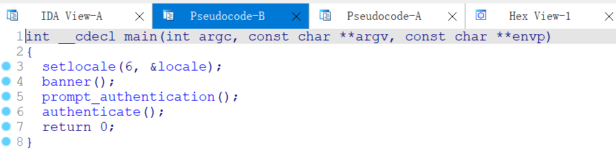
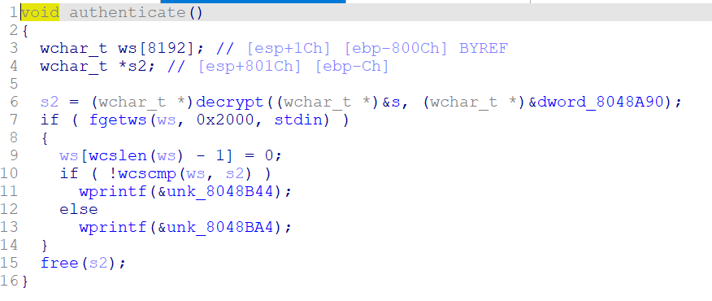
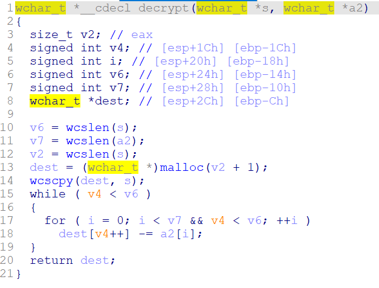
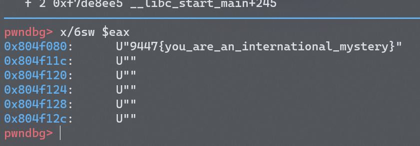
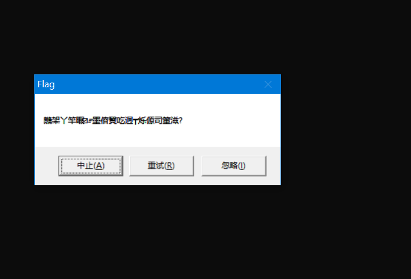
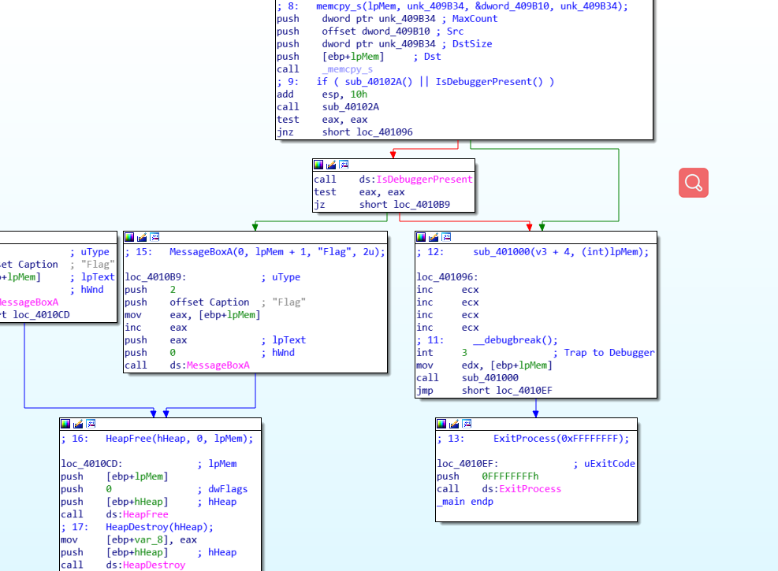
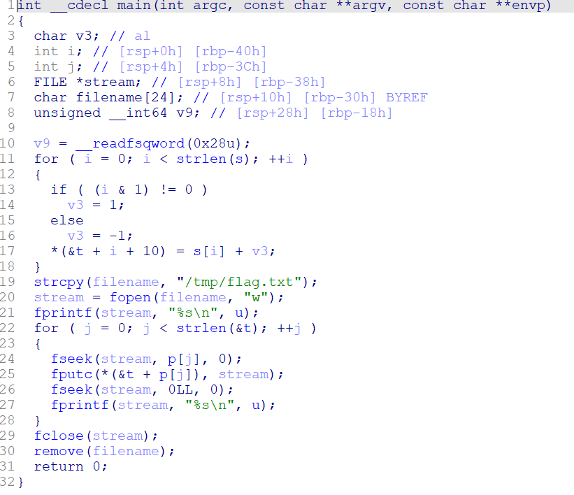
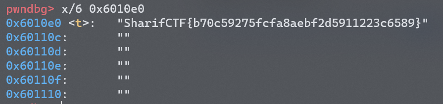

使用exeinfope脱壳，拖进IDA shift+F12搜索字符串。
反编译得到如下代码：
1
2
3
4
5
6
7
8
9
10
11
12
13
14
15
16
17
18
19
20
21
22
23
24
25
26
27
28
29
30
void __fastcall __noreturn main ( int a1 , char ** a2 , char ** a3 )
{
size_t v3 ; // rsi
int i ; // [rsp+3Ch] [rbp-54h]
char s [ 36 ]; // [rsp+40h] [rbp-50h] BYREF
int v6 ; // [rsp+64h] [rbp-2Ch]
__int64 v7 ; // [rsp+68h] [rbp-28h]
char v8 [ 28 ]; // [rsp+70h] [rbp-20h] BYREF
int v9 ; // [rsp+8Ch] [rbp-4h]
v9 = 0 ;
strcpy ( v8 , ": \" AL_RT^L*.?+6/46" );
v7 = 0x65626D61726168LL ;
v6 = 7 ;
printf ( "Welcome to the RC3 secure password guesser. \n " );
printf ( "To continue, you must enter the correct password. \n " );
printf ( "Enter your guess: " );
__isoc99_scanf ();
v3 = strlen ( s );
if ( v3 < strlen ( v8 ) )
sub_4007C0 ();
for ( i = 0 ; i < strlen ( s ); ++ i )
{
if ( i >= strlen ( v8 ) )
sub_4007C0 ();
if ( s [ i ] != ( char )( * (( _BYTE * ) & v7 + i % v6 ) ^ v8 [ i ]) )
sub_4007C0 ();
}
sub_4007F0 ();
}
可以看出，flag就是v7，v6，v8经过一定规则生成的字符串，提取出生成flag的逻辑，写成脚本如下：
1
2
3
4
5
6
v8 = ": \" AL_RT^L*.?+6/46"
v7 = 'ebmarah' [:: - 1 ]
s = ''
for i in range ( len ( v8 )):
s += chr ( ord ( v7 [ i % 7 ]) ^ ord ( v8 [ i ]))
print ( s )
直接拖进IDA，查找字符串。
反编译之后发现有个encode函数，根据函数的逻辑规则写出decode函数如下：
1
2
3
4
5
6
7
8
import base64
buf = base64 . b64decode ( 'XlNkVmtUI1MgXWBZXCFeKY+AaXNt' )
flag = ''
for i in buf :
i -= 16
i ^= 32
flag += chr ( i )
print ( flag )
又一个直接查找字符串就能找到flag的题。
打开是个游戏，游戏通关拿到flag（草）
反编译获得如下代码：
1
2
3
4
5
6
7
8
9
10
11
12
13
14
15
16
17
18
19
20
21
22
23
24
25
26
27
28
29
30
31
32
33
34
35
36
37
38
39
40
41
42
int __cdecl main ( int argc , const char ** argv , const char ** envp )
{
int i ; // ebx
char v4 ; // al
int result ; // eax
char Buffer [ 2 ]; // [esp+12h] [ebp-5Eh] BYREF
char v7 [ 20 ]; // [esp+14h] [ebp-5Ch] BYREF
char v8 [ 32 ]; // [esp+28h] [ebp-48h] BYREF
__int16 v9 ; // [esp+48h] [ebp-28h]
char v10 ; // [esp+4Ah] [ebp-26h]
char v11 [ 36 ]; // [esp+4Ch] [ebp-24h] BYREF
strcpy ( v11 , "437261636b4d654a757374466f7246756e" );
while ( 1 )
{
memset ( v8 , 0 , sizeof ( v8 ));
v9 = 0 ;
v10 = 0 ;
printf ( aPleaseInputYou );
scanf ( "%s" , v7 );
if ( strlen ( v7 ) > 0x11 )
break ;
for ( i = 0 ; i < 17 ; ++ i )
{
v4 = v7 [ i ];
if ( ! v4 )
break ;
sprintf ( Buffer , "%x" , v4 );
strcat ( v8 , Buffer );
}
if ( ! strcmp ( v8 , v11 ) )
printf ( "success! \n " );
else
printf ( "wrong! \n " );
}
printf ( "wrong! \n " );
result = -- Stream . _cnt ;
if ( Stream . _cnt < 0 )
return _filbuf ( & Stream );
++ Stream . _ptr ;
return result ;
}
阅读代码后发现就是将输入的字符串转换为16进制存储，再与给定字符串比较。
因此可以根据给定字符串推导出flag。
题目直接给出了源代码：
1
2
3
4
5
6
7
8
9
10
11
12
13
14
15
16
17
18
19
20
21
22
23
24
25
26
27
28
29
30
31
32
33
34
#include <stdio.h>
#include <string.h>
int main ( int argc , char * argv []) {
if ( argc != 4 ) {
printf ( "what? \n " );
exit ( 1 );
}
unsigned int first = atoi ( argv [ 1 ]);
if ( first != 0xcafe ) {
printf ( "you are wrong, sorry. \n " );
exit ( 2 );
}
unsigned int second = atoi ( argv [ 2 ]);
if ( second % 5 == 3 || second % 17 != 8 ) {
printf ( "ha, you won't get it! \n " );
exit ( 3 );
}
if ( strcmp ( "h4cky0u" , argv [ 3 ])) {
printf ( "so close, dude! \n " );
exit ( 4 );
}
printf ( "Brr wrrr grr \n " );
unsigned int hash = first * 31337 + ( second % 17 ) * 11 + strlen ( argv [ 3 ]) - 1615810207 ;
printf ( "Get your key: " );
printf ( "%x \n " , hash );
return 0 ;
}
根据规则构造payload即可获取flag。
打开来发现是一个非常大的程序：

注意到最后一个函数authenticate可能是验证输入的flag是否正确，打开后如下：

看样子是要比较ws和s2的值是否一致，而s2是由decrypt函数生成的：

生成flag的算法看起来挺复杂，懒得写了，故采用动态调试。阅读汇编代码可知，decrypt函数结束后，返回值存在eax中。
用gdb再decrypt函数处下个断点，程序运行至decrypt处停下，再往前运行一步，再结束运行此函数，此时eax寄存器存储的值就是flag。
1
2
3
4
( gdb) b decrypt
( gdb) n
( gdb) finish
( gdb) x/6sw $eax

打开来发现有一个窗体，弹出了一坨乱码：

打开IDA查看程序逻辑：

发现程序存在反调试IsDebuggerPresent。
跳过反调试，将jnz short loc_401096改为jmp short loc_401096，绕过反调试检查。
再将int 3 ;Trap to Debugger改为nop去掉这个中断。
再跳转回原来的弹窗输出flag。
Patch Program的方法：Edit->Patch Program->Assemble
全部更改完成后，点击Edit->Patch Program->Apply patches to input file
拖进IDA看见如下代码：

分析逻辑之后发现t的值就是flag，可以直接根据逻辑写exp，不过我这里使用动态调试的方法。
在for循环的第一个函数处下个断点，之后直接查看t的值。
1
2
3
( gdb) b fseek
( gdb) r
( gdb) x/6 0x6010e0#t的地址

成功获取flag。
XCTF reverse maze - YenKoc - 博客园 (cnblogs.com)
 zeroy的网络小窝
zeroy的网络小窝{kind=link}
{kind=link}
{kind=link}
{kind=link}
{kind=link}
{kind=link}
{kind=link}
{kind=link}